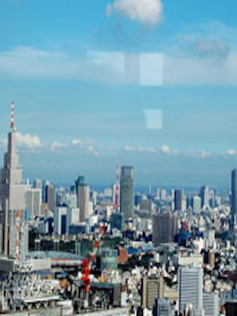

東京都庁の最上階にある展望室。天気のよい日には、南展望室からは六本木ヒルズやお台場、遠くには東京スカイツリー®など、東京らしい街並みを、北展望室からは富士山を照らし出す夕陽や夜景を楽しめます。南展望室のカフェは貸し切りでプライベートパーティをすることもできます（申し込みは直接カフェに）。新しい東京の遊び方が見つかります。※北展望室は第2・4月休、南展望室は第1・3火休（どちらも祝日の場合は開室し、翌日休み）、ほかに10月の第3土曜、年末年始（12月29日～31日、1月2日～3日）、都庁舎電気設備点検日休。
